Gameplay Programmer & Music Composer
Game Development student specialized in Gameplay Programming.
I mainly work with C++, Unreal Engine and Blueprints, as well as C# and Unity.
I love designing gameplay, character and camera systems with one goal: responsive controls and smooth camera movement. The aim is to give the player great sensations.
That's why I want to become a Game Programmer specialized in 3C systems.
We play a game to have fun, not to suffer through it.
My goal is to interact directly with the player to convey the best possible feelings in game, for total immersion.
I would like to offer players what I felt when I first discovered Destiny.
I love exploring and understanding how to create the best feel depending on the situation and the genre (Horror, FPS / TPS shooters, etc.) to offer total immersion.
I also compose music and do sound design.
For me, audio plays an essential role in a video game and deserves as much attention as everything else.
Individual Project - Turn-based combat system featuring clickable areas to choose various actions. Built in C++ with SFML over the course of one week.
This is my first gaming project in Gaming Campus. I had never really coded before, I learned all the basics of coding with this project.
The code in it is ugly, all the code is in one main file, with so many mistakes. I keep it like that to remember where I come from to see my progression and be proud of myself !


Check the GitHub repository !
Individual Project - Point & Click game developed on a custom engine by Sylvain Seccia (Seccia.dev). Due to the absence of dedicated artists, the environment visuals were produced using AI‑generated assets.
With this project I've discovered the aspect of working on a custom engine. It gives me the occasion to take a different approach to producing a game within the imposed constraints.
Team Project - Large‑scale team project where I acted as Lead Tech, coordinating 4 programmers, 2 artists, and 2 business students. Built in C++ with SFML within a three‑week timeframe.
This project gave me the opportunity to work with a large team, it developed my organisation, my communication and my patience... It developed my capacity to read clearly the code of my mates and correct them when it was necessary.


Check the GitHub repository !
Team Project - Runner game focused on player physics and 3C.
Pink Paradox was my first second-year project, designed as a refresher of the concepts learned during the first year.
In a team of 3 programmers, we had to create a Runner while focusing on the 3C principles (Character, Camera, Controller).
The objective was to create smooth and enjoyable gameplay, supported by a procedurally generated environment that evolves according to the player's speed.


Check the GitHub repository !
Introduction to artistic vocabulary and foundational 3D concepts using Blender, aimed at improving collaboration with artists. Completed in two weeks.
I don't have an artist soul but this project was fun to do ^^


Team Project - A large‑scale collaborative project bringing together G‑Art and G‑Tech students, combining artistic and programming expertise. Developed using Unreal Engine 5.6 within a three‑week timeframe.
With a team of 3-4, this project was the occasion to work on Unreal Engine (only Blueprints).
I have worked on the character, the shoot system, the boss, the sound design, the music and all the map design (place holder for artists).


Check the GitHub repository !
Game Jam Project - Made with a team of 19 persons (12 G-Tech and 7 G-Art) with Unreal Engine 5.6 in 40h. I've worked on the weapon, musics, sound design and organisation of all the team.
With this Jam, I have discovered what real team organisation is : Communication on all the task or features you worked on or add to the project. Push & Merge Git synchronisation, communication with artists to know their work and add their creation to the project progressively.


Check the GitHub repository !
Large‑scale Metaverse project, where I contributed to the creation and customization of vehicles in Earniverse, including boats, hoverboards, and horses.
That was a really interesting internship for project organisation. If your project has no folder architecture, it's hard to work in it. Now, I keep better attention to my folders in my projects.
This experience allowed me to discover remote work. As I am used to working from home, adapting to this environment was not an issue.


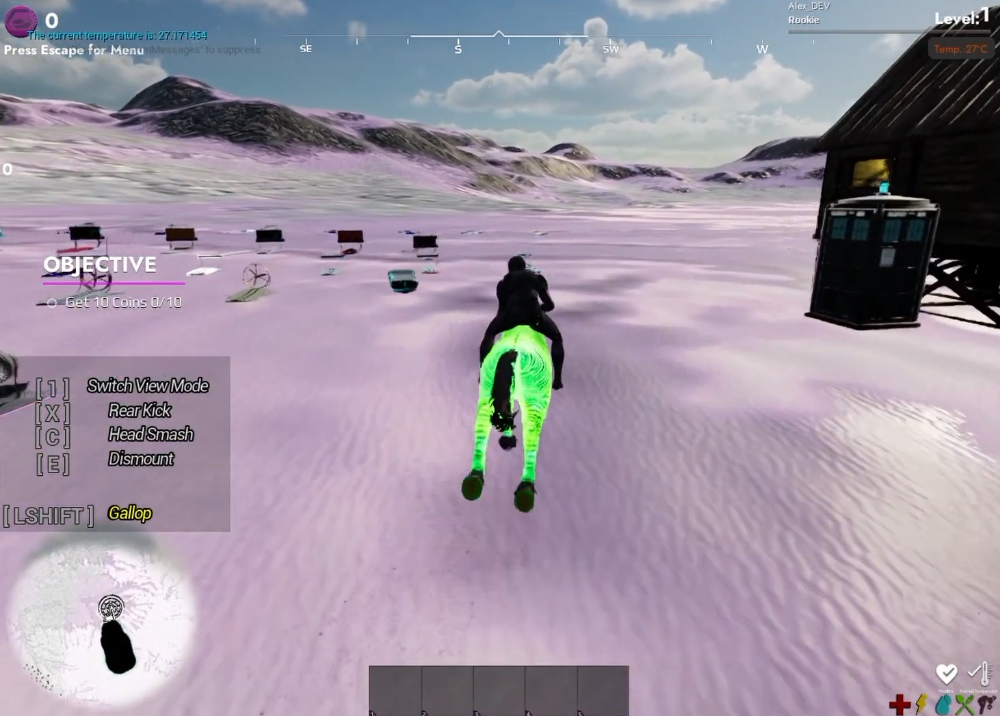

Project focused on Unity fundamentals and 3C systems for both vehicles and character.
The project requirements were fairly simple, so I decided to go beyond the initial scope by creating a complete environment to give the project a more polished and professional look.
My main goal was to create the best possible camera experience for the player and deliver strong game feel through responsive controls and smooth interactions.
I really enjoyed working on this project. At the time, I was not yet certain about the type of developer I wanted to become.
Thanks to this project, I realized that I want to pursue a career as a Gameplay Programmer, ideally specializing in 3C systems (Character, Camera & Controller).


Check the GitHub repository !
Bouclette is a Game Jam project made during the CStudio Event in 46 Hours on Unreal Engine 5.7.
That was my first Game Jam outside the Gaming Campus with Ubisoft, MadBox and Voodoo that represented the jury.
A real challenge because we were two programmers and one artist. That was a great experience because we had the opportunity to confront our skills to other persons and we won the Originality Prize !
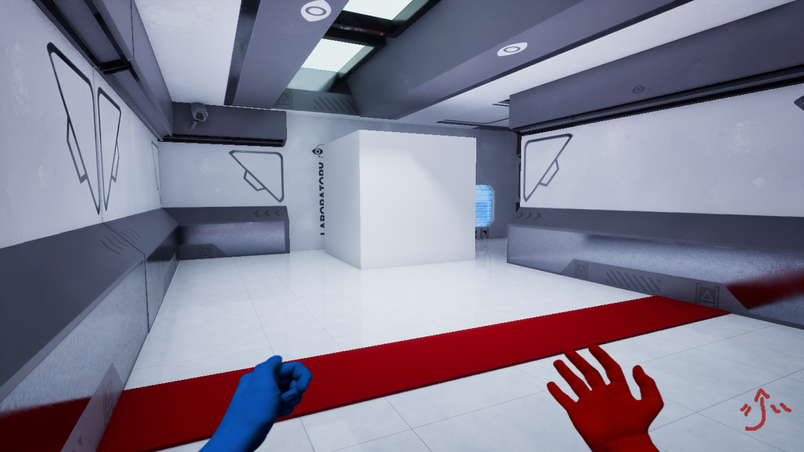
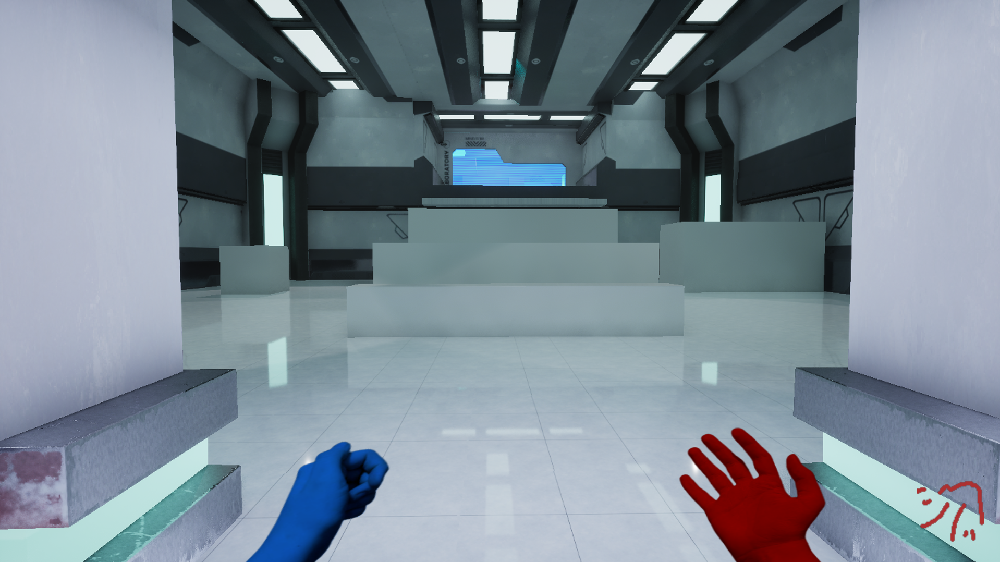
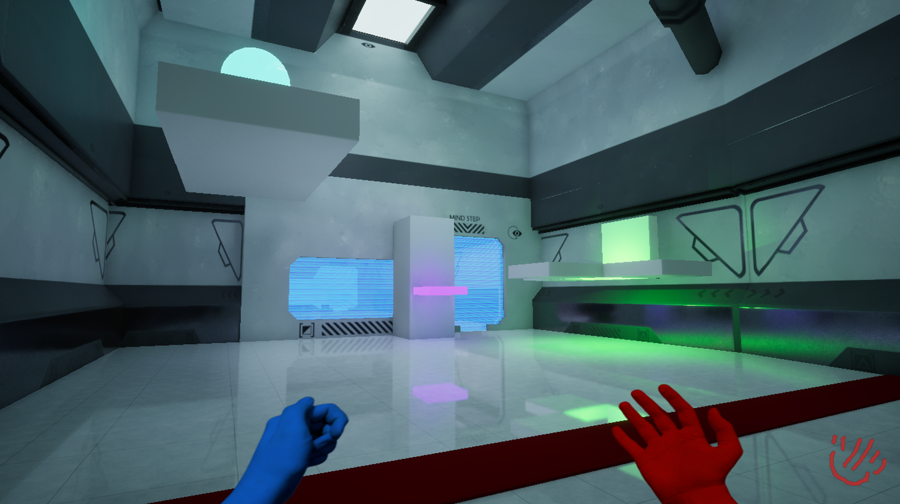
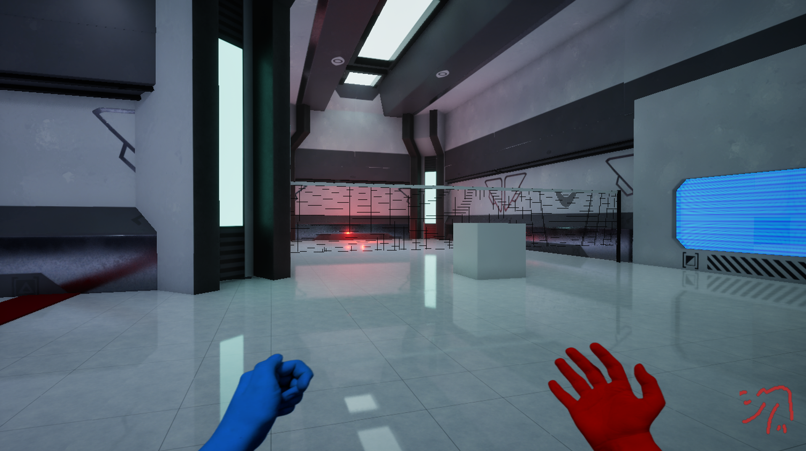
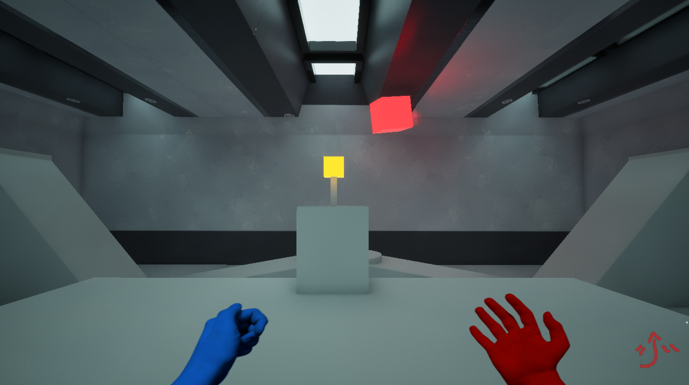

Play on itch.io !
Check the GitHub repository !
Numbadumb is a mini-game compilation inspired by WarioWare.
This project was created with 2 friends for the Unity Game Jam 2026 in one week.
The theme was "Lucky Number" !
I worked on the sound design, musics, and the following mini-games :
- BoomBalloon
- ClownBonk
- ExploFlies
- RunChicken
- ShootTheDuck
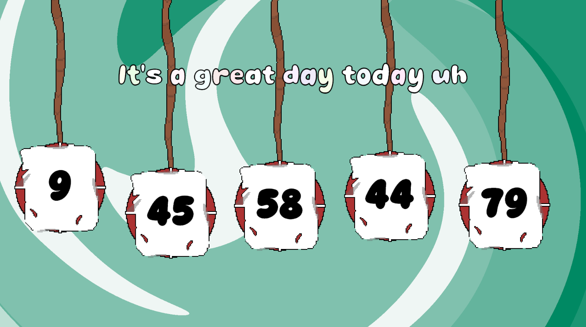
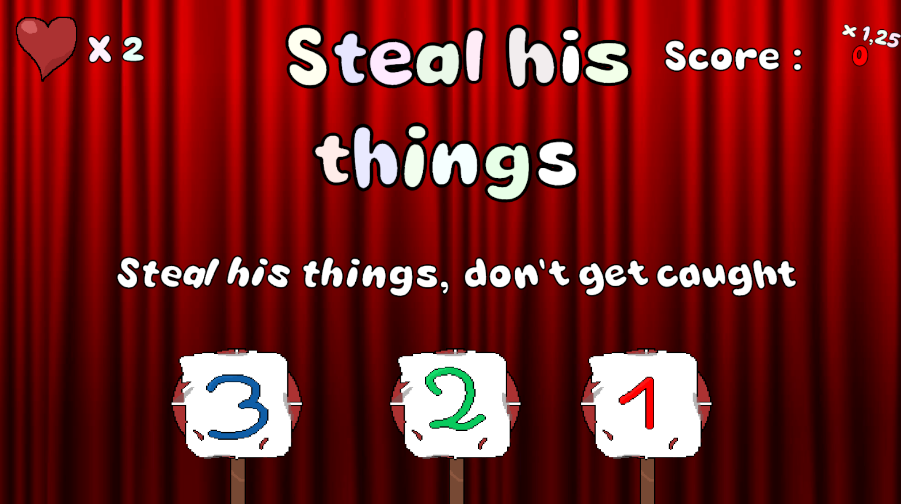
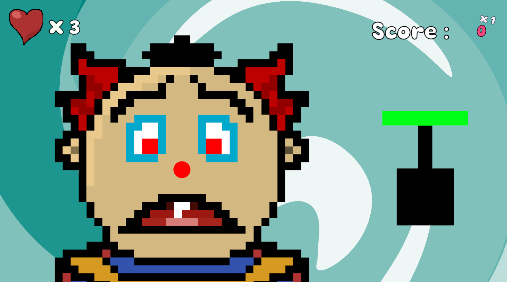
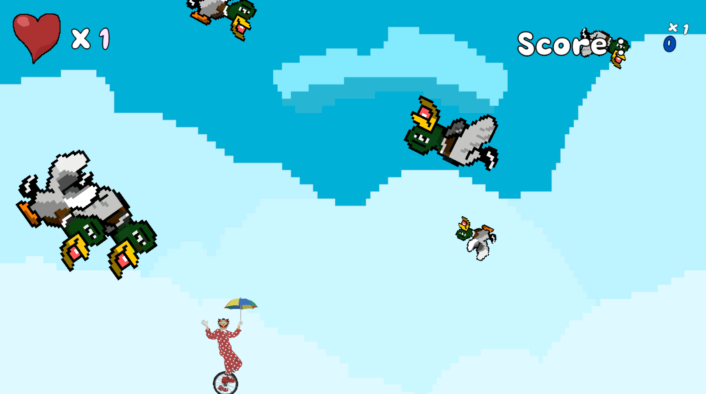
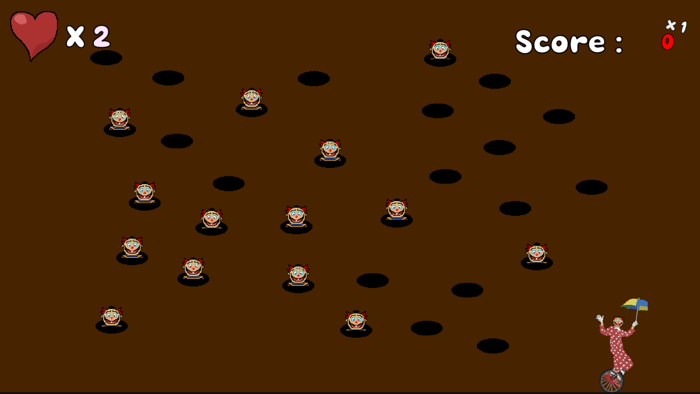
Play in your browser on itch.io !
Check the GitHub repository !
The works listed below are made available under the
Creative Commons Attribution-NoDerivatives 4.0 International (CC BY-ND 4.0) license.
You are permitted to use and distribute these music tracks,
including for commercial purposes, provided that appropriate credit is given to the author like this :
Music : Quentin LOPES / Quope
Source : https://quope.github.io/GitHub-Portfolio/
Ambiance 1 for Detective GC
Ambiance 2 for Detective GC
Ambiance for a daytime fantasy forest biome
Ambiance for a forest biome set during the night
Ambiance for a city builder medieval
Background Music for a Fantasy menu
Ambient for a snowy fantasy biome
Here's all of my experiences outside gaming. If you are interested about it.
15-day temp assignment as a packaging operator, working independently across several production lines.
I collected plastic parts coming off the machines, packed them into cartons and loaded them onto pallets, coordinating with a colleague to wrap the pallets and move them into storage.
Strict compliance with safety rules (safety shoes required) and a sustained pace to keep the ongoing production on schedule.
Two-week temp assignment in a supermarket, across two departments in turn.
In the bakery (7 days), I stocked the shelves with bread fresh out of the oven, tracked what was left so the head baker knew what to bake next, and cleaned the work area at the end of each shift with water jets, soap and a squeegee.
In the rotisserie (7 days), I served customers at the counter, preparing, weighing and labelling their orders, within a team of four, restocking dishes with my colleagues.
Temp assignment as an order picker at Leclerc Drive.
I took an empty trolley and filled it by following the instructions on a handheld device, which I used to validate each product requested by customers.
The job required speed and accuracy to make sure no item was forgotten, and it was a physically active role.
One-month student contract as a packaging operator in an Auvergne cheese factory (cutting and packaging), in a refrigerated area (0 to 4 °C) with strict hygiene rules (white suit, mask, latex gloves, safety shoes).
I rotated between several stations depending on the week, with variable factory shifts (usually 4 am to 12 pm or 7 am to 3 pm):
- Production line: placing various cheeses on trays
- Blue cheese cutting: carrying the cheeses, taking them out of their cold aluminium protective film and bringing them to the cutting machine
- Boxing blue cheese after cutting, at an extremely high pace
- Hand-folding various cheeses, requiring technique, dexterity and speed
- Daily cleaning of each workstation at the end of every shift (water jet, soap, squeegee)
Temp assignment as a self-service sales assistant at Leclerc, across three departments in turn:
- Charcuterie counter (1 day, as reinforcement): I cut the meats the way customers asked, weighed them and handed them over well packed, with the price
- Dairy department (5 days): early morning shelf stocking and help with storing stock, with product rotation, speed and work in a cold area (start at 5 am, finish between 10 am and 12 pm)
- Charcuterie department (5 days): shelf stocking and fridge organization (shelf charcuterie and counter charcuterie), in a cold area, informing customers when needed. Speed was essential: any delay in storing the stock had to be made up the next day.
2-month fixed-term contract as a self-service sales assistant, in charge of the dairy department.
I ran the department almost entirely on my own: restocking the shelves, organizing the fridges (cold area work) and informing customers.
During the last two weeks, a colleague joined me and I trained him so that he could take over from me without difficulty.
One-month job as a multi-skilled employee at a leisure centre (Sodexo).
- Cleaning: restrooms, kitchen, dining room and terrace
- Service: table service indoors and outdoors, both as a waiter and as a runner
View my CV directly below, or open it in a new tab to read it in full screen.
Currently seeking an apprenticeship, internship, or any opportunity in gameplay programming to further develop my skills and take on exciting new challenges.
quentin.lopes@orange.fr